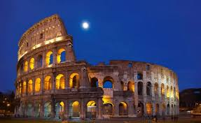

Vēsture, kultūra, daba un izcila atpūta
Itālija ir viena no populārākajām tūristu valstīm pasaulē. Tā ir slavena ar savu bagāto vēsturi, arhitektūru, mākslu un izcilo virtuvi. Valstī atrodas daudzas senas pilsētas, kas piesaista miljoniem tūristu katru gadu.
Roma ir Itālijas galvaspilsēta un viena no senākajām pilsētām Eiropā. Kolizejs ir viens no slavenākajiem vēstures pieminekļiem pasaulē, kas atgādina par Senās Romas laikiem.
